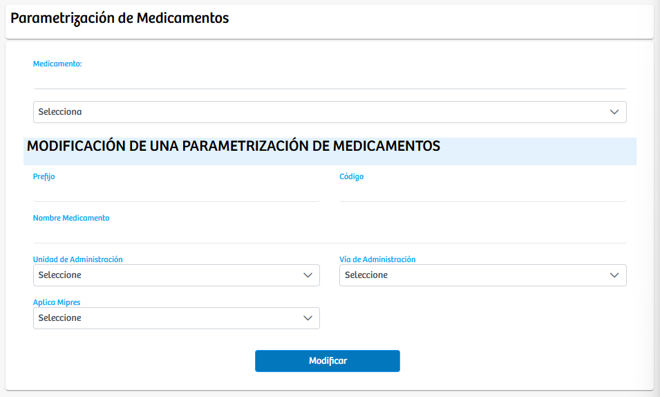

Modulos Sas-Web
Funcionalidades
Parametrizar Medicamentos
En este modulo se nos permite gestionar y parametrizar los medicamentos en la aplicacion, existe un campo para filtrar y es en el SELECT donde podremos elejir el medicamento que vamos a tratar. Debajo de esto tenemos el espacio para modificar las parametrizaciones que ya esten realizadas, entre los campos que se pueden modificar se encuentran: Prefijo, Codigo, Nombre Medicamento, Unidad de Administración, Via de Administración y si aplica Mipres. Una vez tengamos las modificaciones realizadas correctamente presionamos el boton "Modificar"
